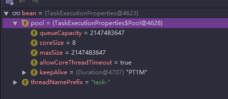

@Async源码探究@SpringBootApplication
@EnableAsync
public class SpringbootLearnApplication {
public static void main(String[] args) {
SpringApplication.run(SpringbootLearnApplication.class, args);
}
}@Service
public class CreatingThread08Service {
@Async
public void call(CountDownLatch countDownLatch) {
try {
Thread.sleep(1000);
} catch (InterruptedException e) {
e.printStackTrace();
}
System.out.println(Thread.currentThread().getName() + " is running");
countDownLatch.countDown();
System.out.println(Thread.currentThread().getName() + " is over");
}
}
@RunWith(SpringRunner.class)
@SpringBootTest
public class SpringbootLearnApplicationTests {
@Autowired
private CreatingThread08Service creatingThread08Service;
private int count = 4;
private CountDownLatch countDownLatch = new CountDownLatch(count);
@Test
public void contextLoads() {
StopWatch stopwatch = new StopWatch("async test");
stopwatch.start();
for (int i = 0; i < count; i++) {
creatingThread08Service.call(countDownLatch);
}
try {
countDownLatch.await();
} catch (InterruptedException e) {
e.printStackTrace();
}
stopwatch.stop();
System.out.println(stopwatch.prettyPrint());
}
}
结果
task-2 is running
task-2 is over
task-4 is running
task-4 is over
task-1 is running
task-1 is over
task-3 is running
task-3 is over
StopWatch 'async test': running time (millis) = 1018
-----------------------------------------
ms % Task name
-----------------------------------------
01018 100%
通过debugger源码找到如下信息，为它默认线程池设置属性

count=20结果
task-1 is running
task-1 is over
task-8 is running
task-8 is over
task-5 is running
task-5 is over
task-3 is running
task-3 is over
task-4 is running
task-4 is over
task-7 is running
task-7 is over
task-2 is running
task-2 is over
task-6 is running
task-6 is over
task-1 is running
task-1 is over
task-8 is running
task-3 is running
task-3 is over
task-5 is running
task-5 is over
task-8 is over
task-4 is running
task-6 is running
task-6 is over
task-7 is running
task-7 is over
task-2 is running
task-2 is over
task-4 is over
task-5 is running
task-1 is running
task-8 is running
task-8 is over
task-1 is over
task-3 is running
task-3 is over
task-5 is over
StopWatch 'async test': running time (millis) = 3021
-----------------------------------------
ms % Task name
-----------------------------------------
03021 100% application.properties中修改spring.task.execution.pool.core-size=20的值，比如我现在改成20，那么打印结果如下task-1 is running
task-9 is running
task-12 is running
task-15 is running
task-17 is running
task-11 is running
task-11 is over
task-1 is over
task-10 is running
task-10 is over
task-8 is running
task-8 is over
task-6 is running
task-6 is over
task-4 is running
task-4 is over
task-7 is running
task-7 is over
task-5 is running
task-3 is running
task-3 is over
task-20 is running
task-20 is over
task-17 is over
task-19 is running
task-19 is over
task-2 is running
task-2 is over
task-18 is running
task-18 is over
task-15 is over
task-16 is running
task-16 is over
task-12 is over
task-14 is running
task-14 is over
task-13 is running
task-13 is over
task-9 is over
task-5 is over
StopWatch 'async test': running time (millis) = 1020
-----------------------------------------
ms % Task name
-----------------------------------------
01020 100% spring.task.execution.pool.core-size=10
spring.task.execution.thread-name-prefix=mytask-
spring.task.execution.pool.queue-capacity=10
spring.task.execution.pool.max-size=20
spring.task.execution.pool.keep-alive=60s
spring.task.execution.pool.allow-core-thread-timeout=true